Как пользоваться программой
Это руководство по живым экранам программы. Снимки сделаны с исходного каталога: 11 папок и 690 выкрасов. Выдача «Иванов И.И.» на фотографиях — учебный пример. В браузере магазина её нет, пока кто-то сам не нажмёт «Выдать».
С чего начать
Программа стоит на общем компьютере магазина. Каталог, выдачи и журнал живут в браузере этого компьютера. Другой компьютер их не видит. Интернет для работы не нужен, он нужен только чтобы открыть сайт в первый раз.
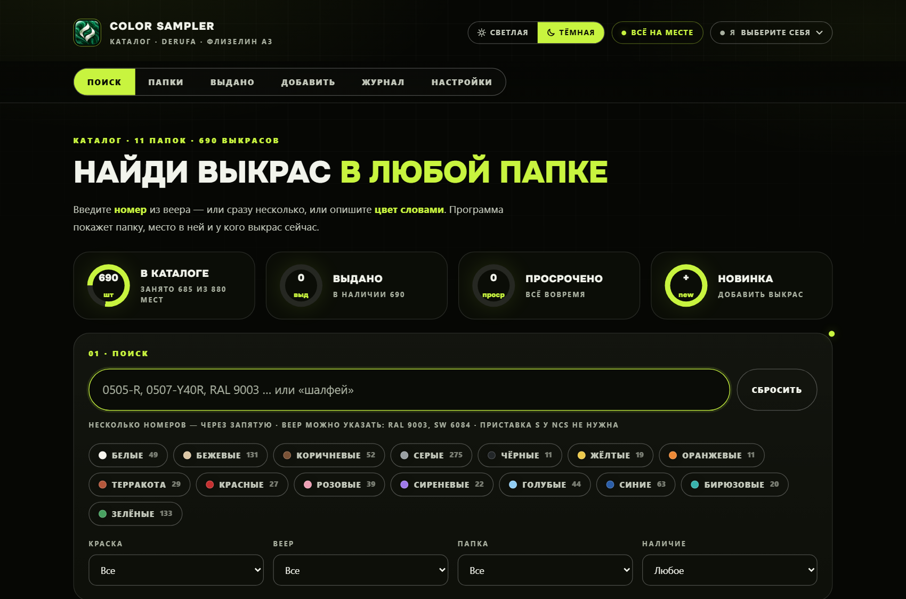
- 1Выберите себя. Справа вверху кнопка «Я · выберите себя». Без этого программа не даст выдать выкрас: она должна записать, кто выдал.
- 2Посмотрите статус. Зелёная плашка «Всё на месте» значит, что ничего не выдано. «Выдано · N» — кто-то унёс листы. «Просрочено · N» — срок возврата прошёл. Нажатие на плашку открывает вкладку «Выдано».
- 3Кольца под заголовком. «В каталоге» — сколько мест занято из лимита всех папок. «Выдано» и «Просрочено» ведут в список на руках. «Новинка» открывает форму добавления.
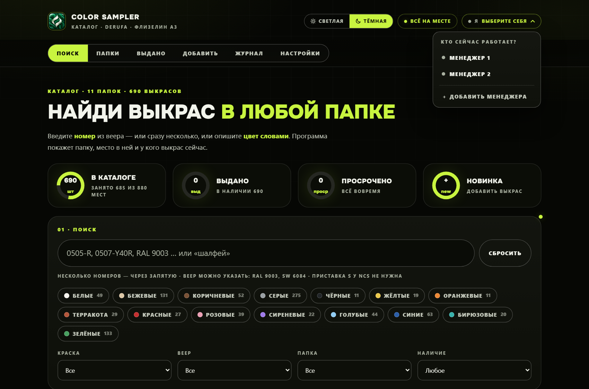
Шесть вкладок: Поиск, Папки, Выдано, Добавить, Журнал, Настройки. На «Выдано» появляется жёлтый кружок с числом, а если есть просрочка — красный.
Найти все оттенки цвета
Цвет программа читает из колонки «Цвет словами» и раскладывает по семействам: белые, бежевые, коричневые, серые, чёрные, жёлтые, оранжевые, терракота, красные, розовые, сиреневые, голубые, синие, бирюзовые, зелёные. Один выкрас может попасть в два семейства. «Серо-зелёный» виден и в серых, и в зелёных. Число на чипе — сколько выкрасов в семействе.
- 1Нажмите чип, например Зелёные. Можно нажать несколько: покажутся выкрасы, которые входят хотя бы в одно из выбранных семейств.
- 2Над таблицей плашки папок: «Папка 6 · 47» значит, что в шестой папке лежит 47 подходящих листов. Нажмите плашку — таблица оставит только эту папку. «Показать все папки» возвращает полный список.
- 3Можно дописать слова в строку поиска:
шалфей,графит, название краски. Слова ищутся по краске, вееру, номеру, цвету и названию папки. Буква «ё» не обязательна. - 4Фильтры под чипами сужают список: краска, веер, папка, наличие («есть в наличии», «выдан», «просрочен»). Они работают вместе со словами и чипами.
- 5Сбросить очищает строку, чипы и фильтры.
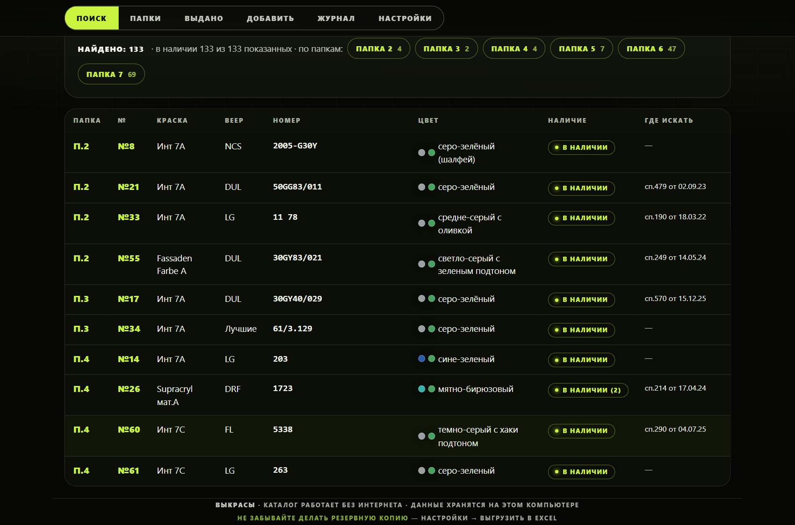
Строка таблицы: папка, номер места, краска, веер, номер цвета, слова цвета с цветной точкой, наличие и «где искать» (спецификация или заказ). Клик по строке открывает карточку.
Найти один номер или список
Если в строке номера, программа переключается в режим «запрос → место». Несколько номеров пишите через запятую, точку с запятой или с новой строки. Веер можно указать в том же куске: RAL 9003, SW 6084. У NCS приставку S писать не нужно, но если она есть, поиск её поймёт.
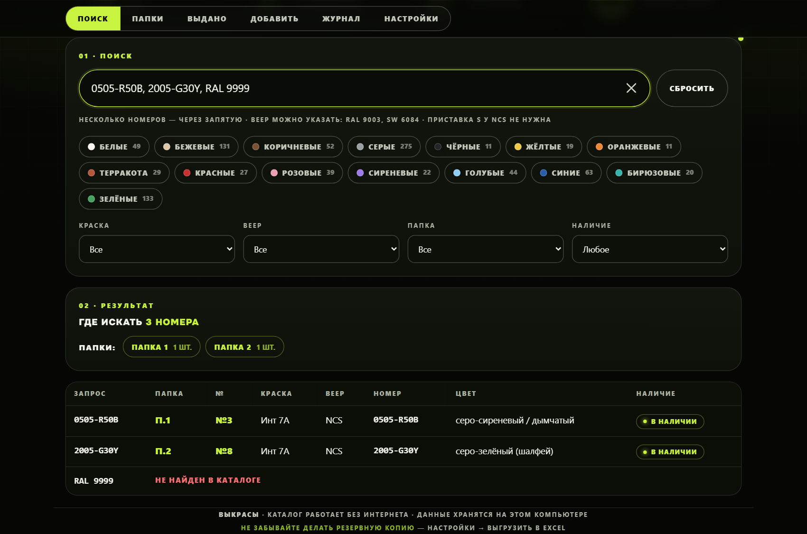
- 01Точное совпадениеНомер в каталоге совпал с запросом. В примере
0505-R50B— папка 1, место №3. - 02Тот же код с пометкойЗапрос
2005-G30Yнайдёт и лист «2005-G30Y -50%», если такой есть. Это тот же цвет с модификатором. - 03Не найденКрасная строка «Не найден в каталоге». Листа в программе нет: его не делали или не внесли.
- 04Плашки папокПод заголовком «Где искать» видно, в какие папки идти. Нажатие открывает папку.
Что видно по одному выкрасу
Карточка открывается из любой таблицы: поиск, папка, выдача, журнал. Крестик или щелчок по тёмному фону её закрывает.
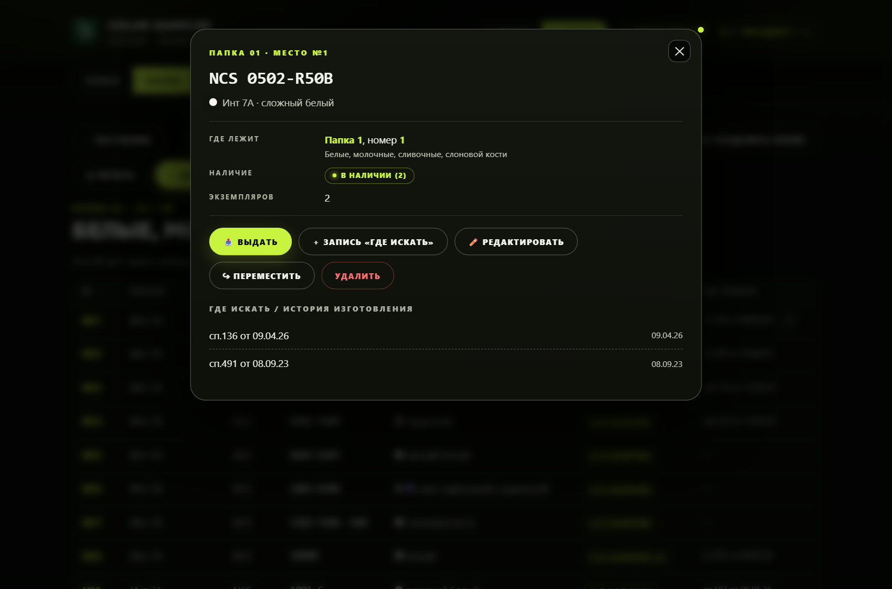
На карточке
- 1Где лежит — номер папки и место. Это то, что написано на листе и на разделителе.
- 2Наличие. «В наличии» или кому выдан и до какой даты. Цифра в скобках — сколько экземпляров свободно. «(2)» значит два листа этого места, оба в папке.
- 3Где искать — откуда лист взялся: «сп.136 от 09.04.26», «зак.733 от 13.05.23». Новую запись добавляет кнопка «Запись „где искать“»: тип (спецификация или заказ), номер, дата, кто делал. Можно вписать свой текст, например «постер».
- 4Этот же цвет в других вариантах — тот же код на другой краске или базе. Ссылка открывает соседнюю карточку.
Кнопки
- 1Выдать — пока есть свободный экземпляр.
- 2Вернуть — появляется, когда лист на руках.
- 3Редактировать — краска, веер, номер, цвет словами, папка, место, экземпляры, кто сделал, дата, примечание и список «где искать».
- 4Переместить — другая папка. Номер программа предлагает сама.
- 5Удалить — только если лист не выдан. Сначала оформите возврат.
Настоящий цвет DRF и похожие листы
Для веера DRF программа знает цвет каждого номера из палитры Derufa. У других вееров (NCS, RAL, SW и остальных) цвет по-прежнему показан словами и точкой семейства.
- 1Квадратик вместо точки. В таблицах у листов DRF рядом со словами цвета стоит квадратик настоящего цвета.
- 2Полоса в карточке. Сверху карточки — большая полоса цвета. Экран показывает цвет приблизительно, решение принимайте по листу. У номеров с пометкой («1171 -30%», «по Q-Base») показан базовый цвет без пометки.
- 3Похожие листы в каталоге. Внизу карточки — шесть ближайших по цвету листов DRF: «почти такой же», «близкий», «похожий», с папкой, местом и наличием. Пригодится, когда нужный лист выдан.
- 4Листа нет в папках. Запрос
DRF 1898покажет цвет этого номера и ближайшие листы, которые есть в папках. Четыре цифры без «DRF» тоже сработают, но с пометкой «если это DRF»: такие же цифры бывают у RAL и SW. - 5Добавление. Когда в форме веер DRF и номер есть в палитре, под номером появляется квадратик цвета, а папка подбирается по ближайшему по цвету листу.
Выдать и принять обратно
Выдача невозможна, пока вверху не выбрано «Я». Срок «вернёт до» программа ставит сама: сегодня плюс число дней из настроек. По умолчанию 14 дней. Дату можно сменить.
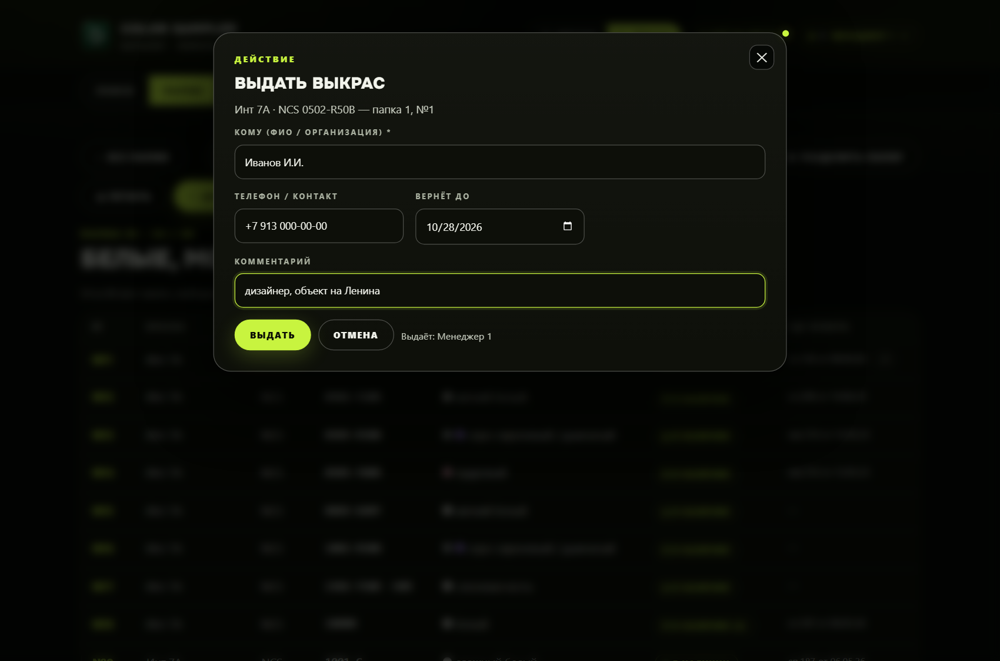
- 1Откройте карточку и нажмите Выдать.
- 2Впишите, кому отдаёте лист. Телефон и комментарий («дизайнер, объект») — по желанию.
- 3Нажмите Выдать. Статус в шапке станет «Выдано · 1», на вкладке появится жёлтый кружок.
- 4Когда лист вернулся, откройте вкладку Выдано и нажмите Вернуть в строке. Программа напомнит, в какую папку и на какой номер его положить. То же самое есть в карточке.
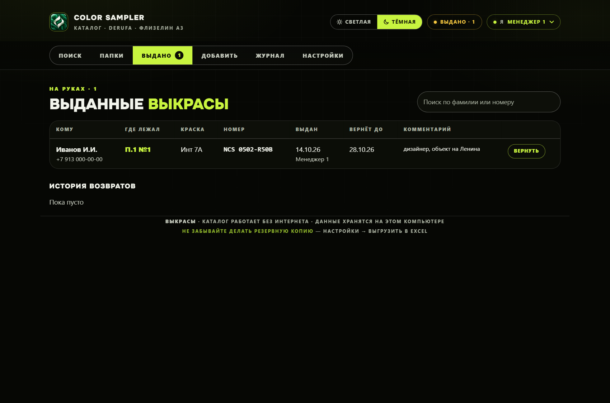
Если экземпляров несколько и их унесли разные люди, при возврате программа спросит, чей экземпляр принесли. Просроченная дата подсвечивается. Клик по строке выдачи тоже открывает карточку.
Папки и лимит 80
Физическая папка не должна быть толще 80 листов, иначе она разъезжается. Кольцо на карточке — занято мест из 80. Жёлтое кольцо — осталось 5 или меньше. Красное — папка уже толще лимита. Папка 4 на исходном каталоге такая: 83 места, подпись «переполнена +3».
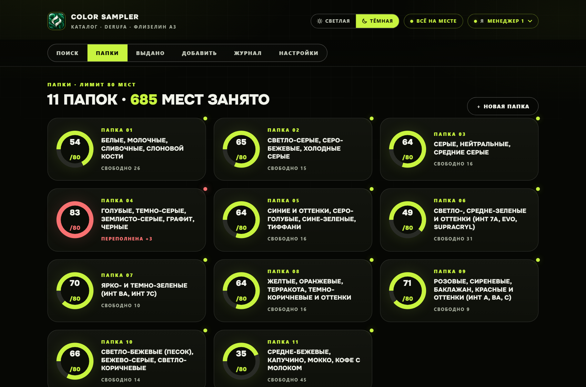
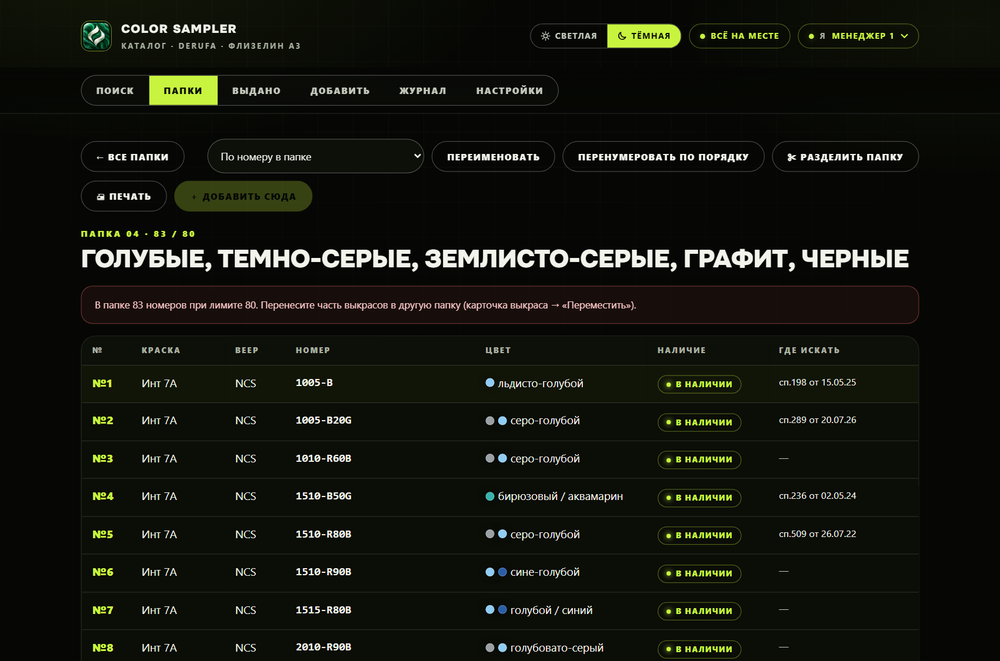
- 01По номеру в папкеТак листы лежат сейчас: 1, 2, 3, 8а, 9…
- 02По порядку вееровКак должно лежать по правилу: сначала краска, внутри краски — веер. Это просмотр, номера на листах не меняются.
- 03ПереименоватьМеняет подпись папки на экране. Номер папки остаётся.
- 04Перенумеровать по порядкуЗаново ставит номера 1, 2, 3… в порядке правила. Старые номера на бумаге придётся переписать. После этого распечатайте список кнопкой «Печать».
- 05ПечатьЛист папки без тёмного фона — чтобы сверять с полкой.
- 06Новая папкаКнопка на общем экране. Программа берёт следующий свободный номер среди обычных папок и спрашивает название.
Какой номер получит новый лист
Уже лежащие листы программа никогда не перенумеровывает сама. Новый лист встаёт по правилу, а номер пишется так, чтобы соседей не двигать.
- 1Сначала краска. Порядок по умолчанию: Инт 7А, Инт 7ВА, Инт 7С, Инт 20А, Инт 20С, Инт 3, Evolution, Expo, Fassaden Farbe, Latexmatt, Mattlatex, Supracryl. Полный список — в Настройках, его можно поправить.
- 2Внутри краски — веер: Чистый, NCS, DRF, DUL, FL, LG, RAL, SW, TIK, Лучшие, LAB, скан.
- 3Если такая краска и такой веер в папке уже есть, новый лист встаёт сразу после последнего из этой группы.
- 4Если группы ещё нет, лист встаёт после всего, что по правилу идёт раньше.
- 5Место в конце папки получает следующий целый номер. Место в середине получает номер соседа и букву: 15а, 15б, 15в. Буквы русские, как у уже существующих «8а» и «9а».
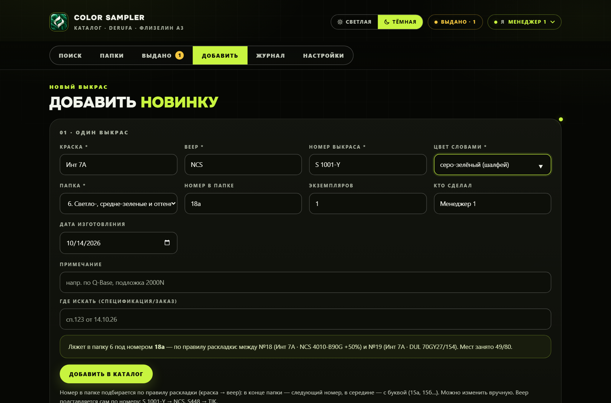
Номер в поле можно стереть и написать свой. Если этот номер в папке уже занят, появится красное предупреждение. Добавить всё равно можно, но только после подтверждения.
Веер программа часто угадывает по номеру
| Как выглядит номер | Какой веер |
|---|---|
| S 1001-Y, 0500-N, 1002-Y20R, русская «С» тоже | NCS. Слово «NCS» в начале номера программа уберёт, букву S оставит. |
| S448, F482, Х 37 — одна буква и 2–3 цифры | TIK |
| Начинается с RAL | RAL |
| Четыре цифры без тона | Не угадывает: так выглядят и RAL, и SW, и DRF. Веер нужно вписать. |
Пока вы сами не трогали поле «Веер», оно заполняется само. Если веер пустой, добавить нельзя. Если номер похож на другой веер (в списке NCS, TIK, RAL, DRF, DUL, FL, LG, SW), программа покажет красное предупреждение. Добавить можно только после галочки «Я проверил — веер указан правильно». Для «скан», «Лучшие», LAB и «Чистый» такой сверки нет.
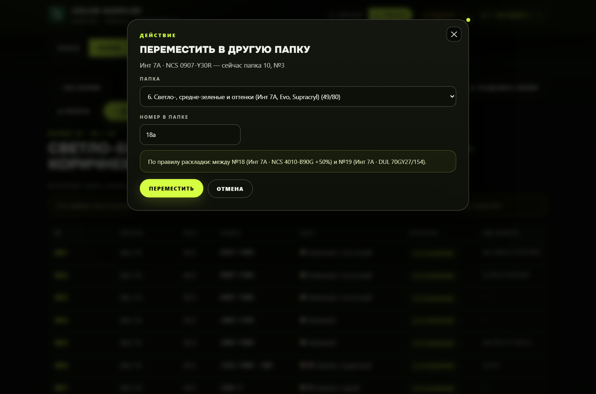
Папка в списке, где уже 80 мест, для переноса недоступна. Если выбранный номер занят, программа спросит, точно ли класть поверх.
Разделить толстую папку
Когда папка близка к 80 или уже толще, её режут на части. На обложке будет «10/1» и «10/2». Внутри программы номер папки остаётся своим, а дробь — только подпись.
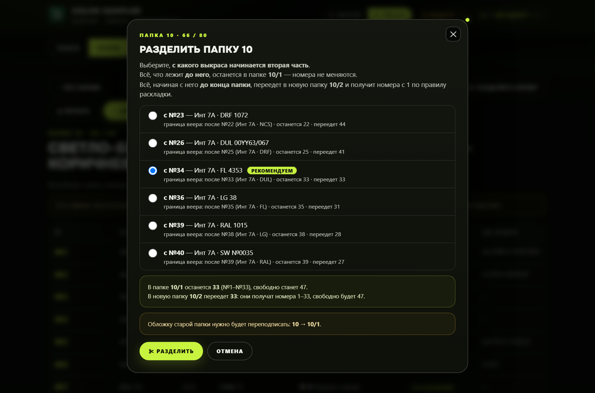
- 1В папке нажмите Разделить папку. Если границы краски или веера нет, программа откажется: резать посередине одной группы нельзя. Одинаковые номера (дубли) тоже не разрываются.
- 2Выберите, с какого листа начинается вторая часть. Всё до него остаётся в 10/1 со старыми номерами. Хвост переезжает в 10/2 и получает номера 1, 2, 3… уже в порядке правила.
- 3Подтвердите. Программа покажет список переноса: где лист лежал, какой новый номер написать. Его можно напечатать и идти по полке сверху вниз: достать, зачеркнуть старый номер, написать новый, положить в новую папку по порядку 1, 2, 3.
- 4Если у папки не было дроби, переподпишите старую обложку: 10 → 10/1. Если части 10/2 и 10/3 уже были, они сдвинутся на единицу — обложки тоже переподпишите. Программа напишет, какие именно.
У папки-части остаётся кнопка «Список переноса», пока вы не закончили перекладывать. Новый лист, если папку в форме не выбрали руками, попадает в ту часть, где уже лежит такая краска и веер. Иначе — в последнюю подходящую часть. Если вы выбрали часть сами и она не та, появится жёлтое предупреждение и кнопка «Перейти в …».
Добавить один выкрас
Вкладка «Добавить» или кнопка «Добавить сюда» внутри папки. Обязательны краска, веер, номер выкраса и цвет словами. Папку программа пытается подобрать сама: по семейству цвета и по тому, какая краска уже лежит в папках. Название папки тоже учитывается («зелён» ближе к папкам 6 и 7). Полную папку она почти не предлагает.
- 1Впишите краску. Список подсказывает уже известные названия, можно выбрать или написать новое.
- 2Впишите номер. Веер часто встанет сам. Проверьте его.
- 3Цвет словами пишите так, как будете искать: «серо-зелёный (шалфей)», а не только код. От этих слов зависит чип цвета.
- 4Посмотрите зелёную строку под формой. Там папка, номер места и между какими листами он встанет. Если номер не нравится — поправьте поле «Номер в папке».
- 5«Где искать» — спецификация или заказ, если они уже есть. Экземпляры — сколько одинаковых листов кладёте на это место. По умолчанию один.
- 6Добавить в каталог. Откроется карточка нового листа. Запись попадёт в журнал.
Если такой номер уже есть на другой краске или в другой папке, программа предупредит и покажет, где. Это не запрет: один код NCS часто делают на нескольких базах.
Добавить сразу несколько из Excel
Нижняя карточка на вкладке «Добавить». Скопируйте строки из Excel и вставьте в большое поле. Колонки по порядку:
Краска · Веер · Номер · Цвет словами · Папка · Где искать
Последние две можно оставить пустыми: папка подберётся по цвету. Разделитель — табуляция, как при копировании из Excel, или точка с запятой.
- 1Вставьте строки. Пример в подсказке поля: краска, веер, номер, цвет, номер папки, спецификация.
- 2Нажмите Проверить. В таблице будет «папка 6, №18а» или красный текст ошибки.
- 3Пустой веер программа попробует угадать по номеру. Если веер сомнительный, строка станет ошибкой: её нужно поправить или добавить через форму «Один выкрас», где есть галочка «я проверил».
- 4Колонка «Папка» понимает дробь:
10/2. Если написано просто10, а папка уже разделена, часть выберется по правилу раскладки. - 5Добавить всё записывает только строки без ошибки. Несколько новых листов одной краски и веера получают 15а, 15б, 15в по очереди, а не один и тот же номер.
Кто что сделал
Журнал пишет выдачу, возврат, добавление, правку, перенос, удаление, новую запись «где искать», создание и переименование папки, разделение, перенумерацию, загрузку каталога и смену настроек. В строке есть время, имя из кнопки «Я» и текст. Клик открывает карточку, если лист ещё в каталоге. Поле «Фильтр» ищет по тексту строки. Хранится до 5000 последних записей.
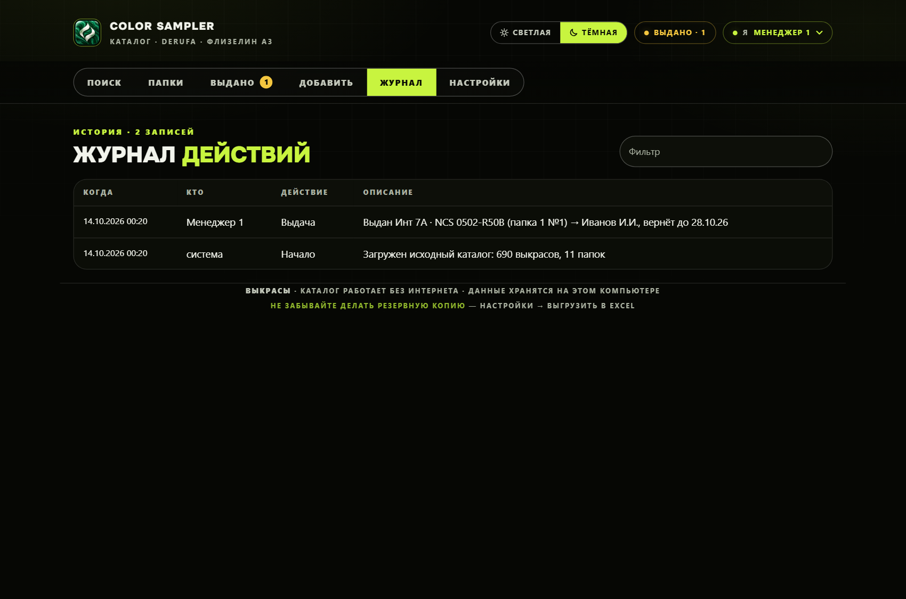
Настройки и запасная копия
Менеджеры — по одному имени на строку. Отсюда они попадают в кнопку «Я». Здесь же лимит мест в папке (80) и срок выдачи в днях. Названия папок можно поправить списком, не заходя в каждую. Порядок красок и вееров — это то самое правило раскладки. После правок нажмите Сохранить настройки.
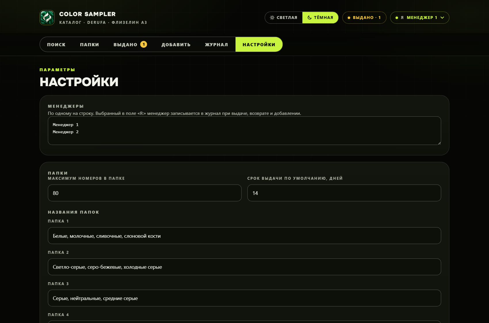
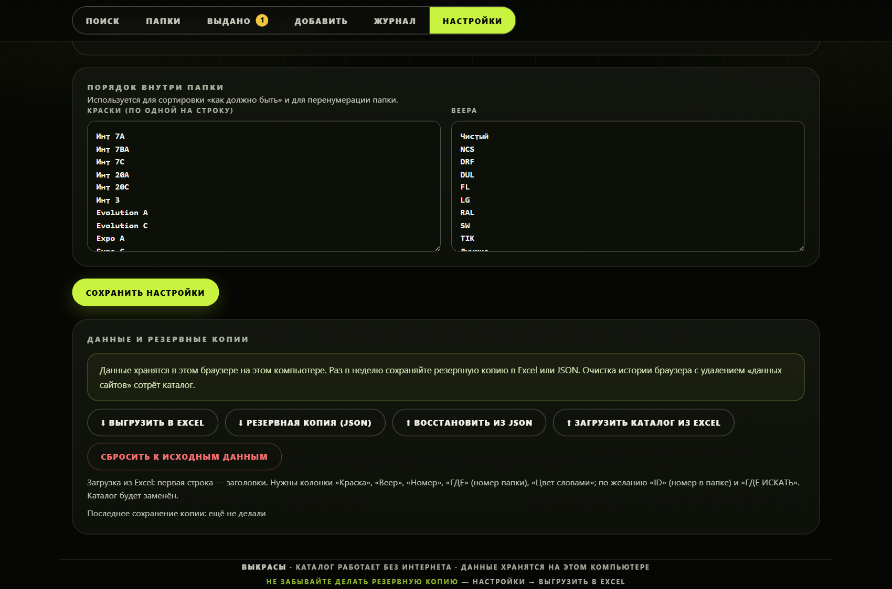
- 01Выгрузить в ExcelЧетыре листа: выкрасы, названия папок, выдачи, журнал. Папки-части пишутся как 10/2. Это файл, который можно унести на флешку.
- 02Резервная копия JSONПолный снимок: каталог, выдачи, журнал, настройки. Им же программа восстанавливается кнопкой «Восстановить из JSON».
- 03Загрузить каталог из ExcelЗаменяет каталог. В первой строке нужны заголовки «Краска», «Веер», «Номер», «ГДЕ», «Цвет словами». По желанию «ID» (номер в папке) и «ГДЕ ИСКАТЬ». Дробь 10/2 создаст недостающую часть. Активные выдачи при этом закроются — программа предупредит.
- 04Сбросить к исходнымВозвращает каталог, с которым программа ставилась. Всё, что добавляли и выдавали на этом компьютере, пропадёт.
Дата «последнее сохранение копии» внизу карточки обновляется, когда вы скачали Excel или JSON. Если там «ещё не делали» — сделайте сейчас.
Обычный день в магазине
- 1Открыли программу, выбрали себя в «Я».
- 2Клиент назвал номера — вставили их через запятую. Или назвал цвет — нажали чип.
- 3По строке увидели папку и место. Ушли к полке.
- 4Если лист отдают с собой — карточка, «Выдать», фамилия, дата.
- 5Когда принесли обратно — «Выдано», «Вернуть», положили на тот номер, который написан в подтверждении.
- 6Новый лист — «Добавить», проверили веер и предложенный номер 15а, написали тот же номер на листе, положили между соседями, которых показала зелёная строка.
- 7В конце недели — Настройки, «Выгрузить в Excel».